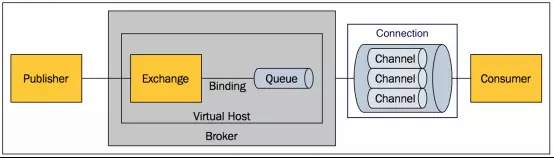

- AMQP協議
- Broker: RabbitMQ Server, 接收/發送訊息
- Virtual host: 根據不同用戶區分不同vhost
- Connection: Publisher/consumer 跟broker的TCP連線
- Channel: 彼此間互不相關聯，舒緩connection壓力
- Exchange: Publisher發布訊息到Broker後負責分派訊息到Queue
- Queue: 消息佇列
- Binding: Exchange跟Queue之間虛擬連接，Exchange用於判斷分發到哪一個Queue依據
- Exchange Type
- Direct: Key-Value, binding key需一致將其發到對應的Queue
- Fanout: 分發到所有的Queue
- Topic: 通過分配規則(類似正規表示式)分發到Queue
- RabbitMQ Cluster
- 單點故障會造成資料流失
- 可藉LB達到附載平衡
- 實作範例